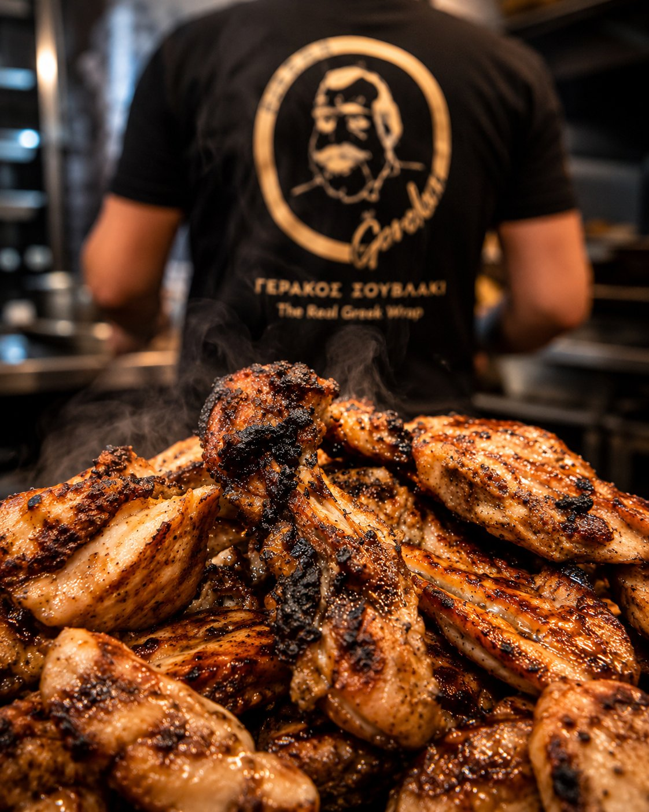
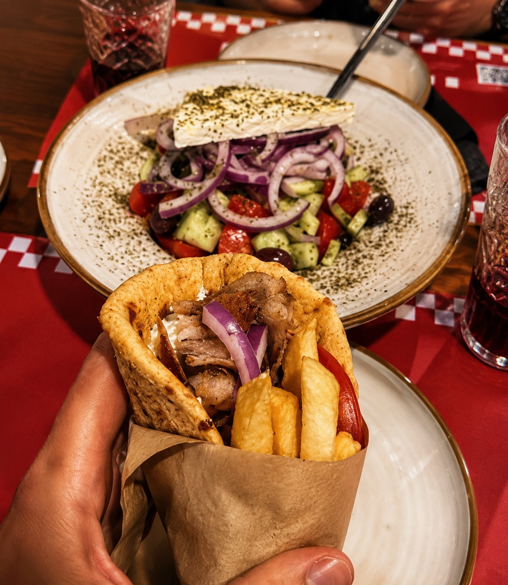

Η Ιστορια μας
Αυθεντικές ελληνικές γεύσεις, ψημένες με μεράκι
Στον Γεράκο Σουβλάκι, κάθε πιάτο ξεκινά από την ίδια φιλοσοφία: ποιοτικά υλικά, σωστό ψήσιμο και αυθεντική ελληνική γεύση.
Καθημερινά ετοιμάζουμε ζουμερό γύρο, καλοψημένα καλαμάκια, φρέσκες πίτες και παραδοσιακές συνταγές που έχουν αγαπηθεί από κατοίκους και επισκέπτες της Σαντορίνης. Κάθε παραγγελία ψήνεται τη στιγμή που τη ζητάς, ώστε να απολαμβάνεις τη μέγιστη φρεσκάδα και ποιότητα.
Είτε επιλέξεις ένα γρήγορο τυλιχτό, είτε μια χορταστική μερίδα, είτε ένα οικογενειακό γεύμα με φίλους, στόχος μας είναι να σου προσφέρουμε την αυθεντική εμπειρία του ελληνικού σουβλακιού σε κάθε μπουκιά.
Γεράκος Σουβλάκι
The Real Greek Wrap